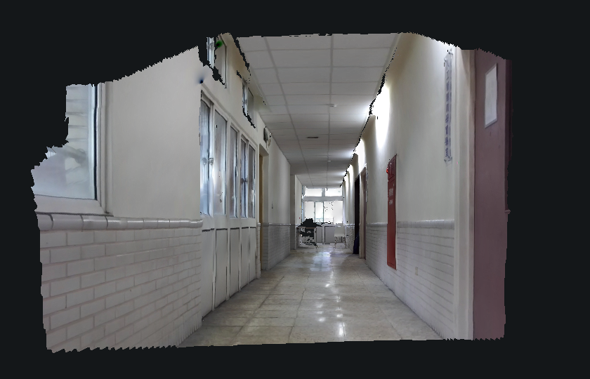
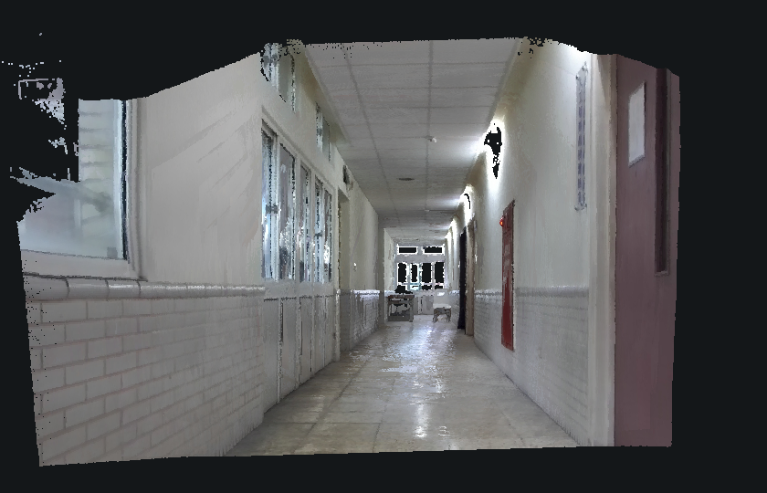

技術簡報
SLAM
同步定位與建圖
從原理、感測器選擇，到 PMG3D 三維建模系統
技術簡報
從原理、感測器選擇，到 PMG3D 三維建模系統
在沒有地圖的環境裡，一邊估計自己的位置姿態，一邊把周圍環境建成地圖。
LOCALIZATION
我在哪裡、朝向哪個方向。
互相依賴
MAPPING
周圍環境的形狀與位置。
沒有地圖就無法定位，沒有定位就拼不出地圖，所以兩件事必須同時解。
原理
不論用哪一種感測器，SLAM 系統大致都分成這四步。
01
相機、光達、慣性感測器取得原始資料
02
比對相鄰兩刻的資料，估計移動了多少
03
所有時刻一起調整，把誤差平均攤開
04
用調整後的位置姿態，把資料拼成點雲或網格
認出回到來過的地方，給後端一條「頭尾相接」的約束；這是消除累積誤差的關鍵。
原理
實際路徑
估計路徑
回環約束（虛線）
里程計每一步都有小誤差，走得越遠累積越多。
認出回到同一個地方，就知道路徑的頭尾應該接起來。
把落差攤回整條路徑，同一面牆才不會在地圖上疊成兩層。
原理
常用：單線光達、相機
倉儲搬運、清掃、送餐，在室內自己定位並規劃路徑。
常用：多線光達＋相機
沿廠區、隧道、管道巡視，把異常標在地圖上的位置。
常用：多線光達＋相機
園區接駁、物流配送到道路自動駕駛，與預先建好的地圖比對定位。
常用：相機＋慣性感測器
室內、橋下等收不到衛星訊號的地方，靠它懸停與避障。
常用：相機＋慣性感測器
追蹤頭戴裝置的位置姿態，把虛擬物件固定在真實空間。
常用：光達或雙目相機
手持、推車或背負式掃描，把現場變成點雲與模型。
屬於「測繪與 3D 建模」：重點不在即時導航，而在帶回一個精確、有貼圖的模型。
原理
| 項目 | 雙目相機（視覺） | 多線光達 |
|---|---|---|
| 測距方式 | 左右影像的視差換算距離 | 雷射飛行時間直接測距 |
| 距離誤差 | 隨距離平方增加，近處最準 | 遠近大致相同 |
| 顏色與紋理 | 有，可直接貼圖 | 無，只有反射強度 |
| 光線條件 | 需要照明與表面紋理 | 全黑也能運作 |
| 資料密度 | 每張影像都是密集深度 | 依線數而定，線數少則稀疏 |
| 常見弱點 | 白牆、反光、玻璃 | 長直走廊形狀重複、玻璃 |
沒有哪一種感測器全贏：選擇取決於現場的光線、距離，以及成果是否需要顏色。
感測器
線數是垂直方向的雷射數量；本體旋轉一圈，得到 8 條環狀掃描線。
感測器
01
掃一圈的期間本體在動，用慣性感測器把各點拉回同一時刻
02
從掃描線上找出邊線與平面上的點
03
把新的一圈對到已累積的地圖，求出位置姿態
04
加入新的點，遇到回環時整體校正
線數少的時候要注意
垂直方向的約束少，俯仰與高度容易飄，要靠慣性量測穩住。
單圈很稀疏，邊走邊累積多圈，才會成為可用的地圖。
沿走廊方向缺少可對齊的形狀，前後位置容易滑動。
公開的代表作法：LOAM、LIO-SAM、FAST-LIO
感測器
兩種感測器的弱點剛好錯開，所以常見的做法是一起用。
8 線光達
＋
雙目相機
融合後的分工：光達穩住位置姿態，影像補滿表面與顏色。
感測器
產品
錄一段影片，帶回一個有照片貼圖的 3D 模型。
雙目相機＋嵌入式運算主機，錄影與重建在同一台機器完成。
現場只管錄影，耗時的最佳化留到離線做。
01 · 感測
推車或手持，雙目相機錄下原始影像
02 · 後端最佳化
整段錄影一起最佳化，消除去回程的疊層
03 · 建圖
各張深度圖依平差結果，融合成點雲或網格
04 · 成果
用原始照片貼圖，在 3D 視窗直接檢視
即時追蹤不會回頭修正，來回走廊容易疊成兩層；離線平差把整段路徑一起調整，兩層合而為一。
PMG3D
1
錄下原始影像，供離線功能使用。
2
邊走邊建點雲，現場確認涵蓋範圍。
3
平差到貼圖一次跑完，約 15 分鐘。
4
5 mm 彩色點雲，約 1 小時。
5
約 10 分鐘，精度幾乎相同。
6
在 3D 視窗檢視點雲或貼圖網格。
可選 4／7／10／15／20 m，預設 10 m；距離越遠涵蓋越大，遠處的雜訊也越多。
PMG3D

貼圖網格

彩色點雲
1.19 cm
去回程重疊誤差中位數，建模距離 7 m
1.48 cm
同一段走廊，建模距離 10 m
0.74 cm
另一段走廊來回 20 m 的重疊誤差
PMG3D
已實測
來回 20 m 的走廊，去回程重疊誤差約 1 cm；牆面的標示與文字在貼圖上清楚可辨。
可應用
建模距離可調到 15 或 20 m，涵蓋較大的斷面；現場需要足夠的照明。
可應用
設備、管線與標示的現況紀錄，帶回辦公室再檢視。
可應用
裝修前後、驗收與維護管理用的 3D 現況，點雲與貼圖網格都能輸出。
除了手持與推車，也可以搭載在機器人、無人車上，沿巡檢路線錄影建模。
PMG3D
成果好壞主要取決於拍法。
PMG3D
01
SLAM 同時解定位與建圖，累積的誤差靠回環與最佳化收斂。
02
相機給密集的表面與顏色，8 線光達給不受光線影響的距離。
03
PMG3D 以離線平差，把走廊去回程的重疊誤差壓到 1 cm 上下。
延伸方向（評估中）
搭配 8 線光達：長距離的位置姿態由光達穩住，影像負責表面與貼圖。